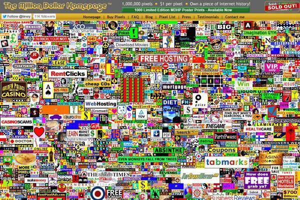

Потенциальные клиенты часто начинают знакомство с вашим бизнесом с главной страницы сайта. От ее дизайна, функциональности, юзабилити и информативности зависит первое впечатление пользователя о бренде. Из этой статьи вы узнаете, как оформить главную страницу сайта.
Хотите, чтобы главная страница выглядела так? Если нет, читайте дальше
Во-первых, главная страница чаще других становится первой точкой контакта бизнеса с потенциальным клиентом. Поэтому она должна производить на пользователей благоприятное впечатление. Во-вторых, главная играет роль информационного хаба. С помощью этой страницы пользователь должен понять, где искать необходимые в данный момент сведения. В-третьих, главная должна обеспечивать пользователю базовую функциональность, например, возможность регистрации и входа в учетную запись, заказа обратного звонка, быстрой покупки топ-продукта, подписки на рассылку и т.п.
Идеальная главная страница должна обладать следующими характеристиками: